"Having somewhere to go is home. Having someone to love is family. And having both is blessing."
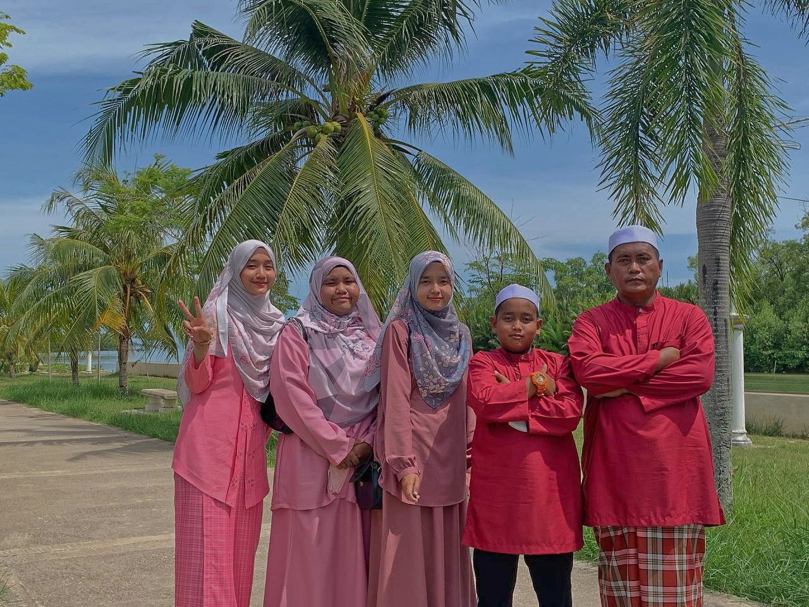
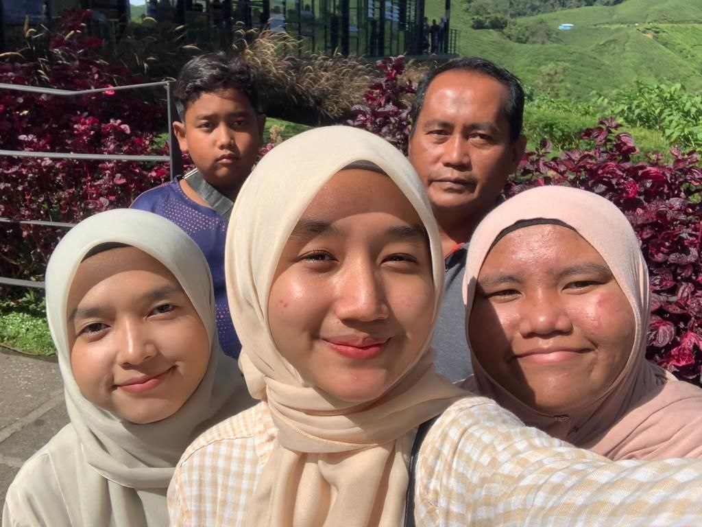
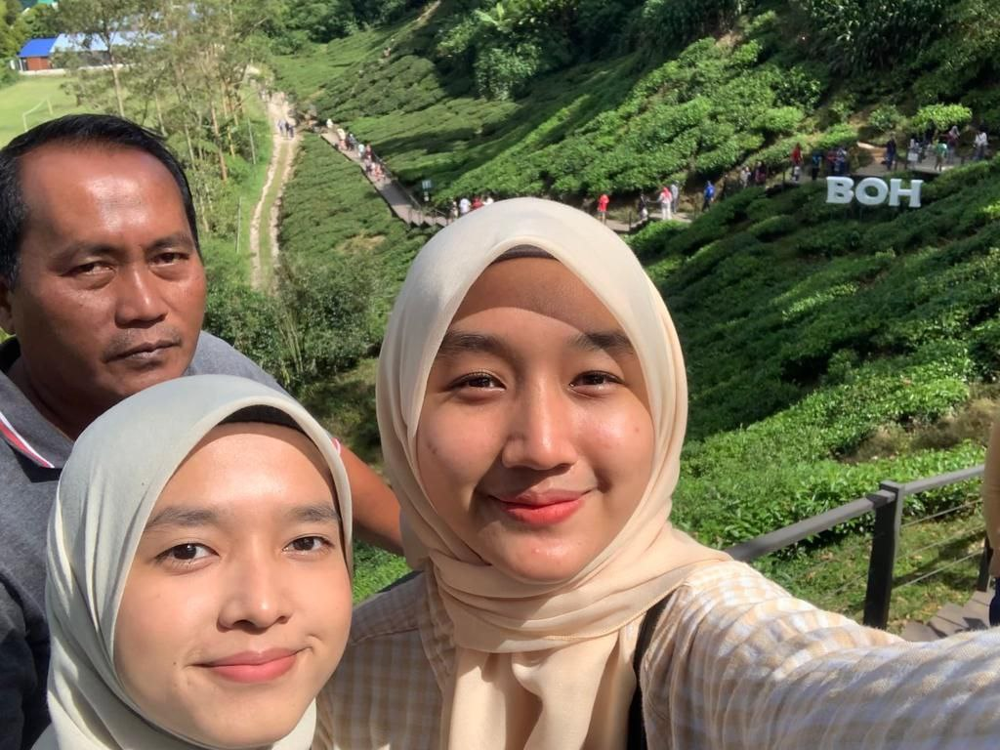
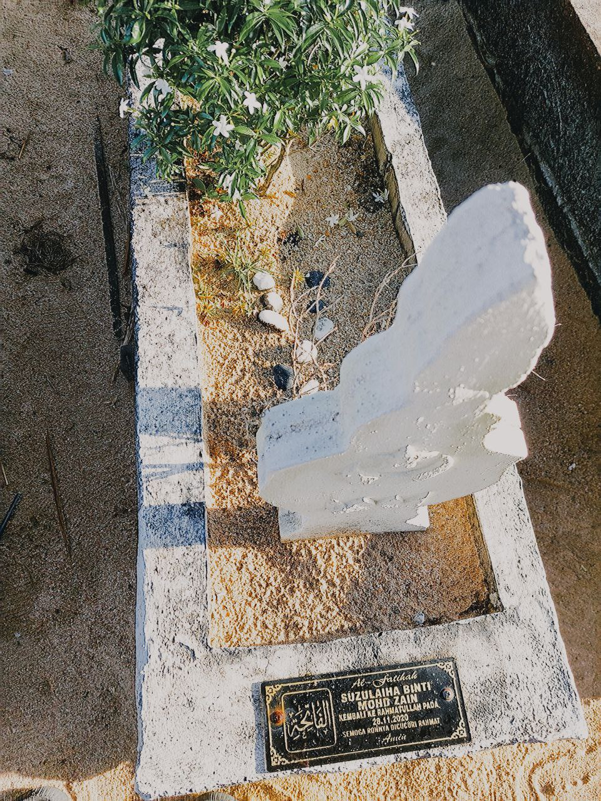
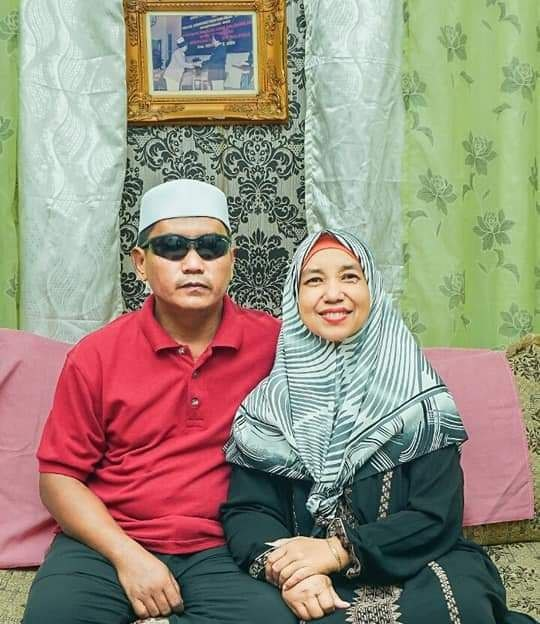 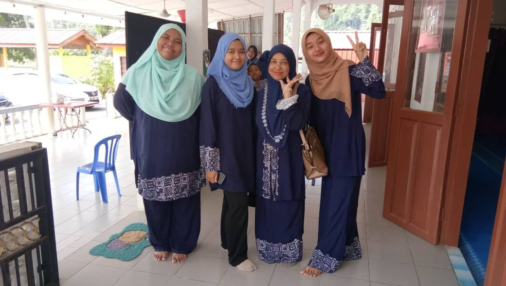 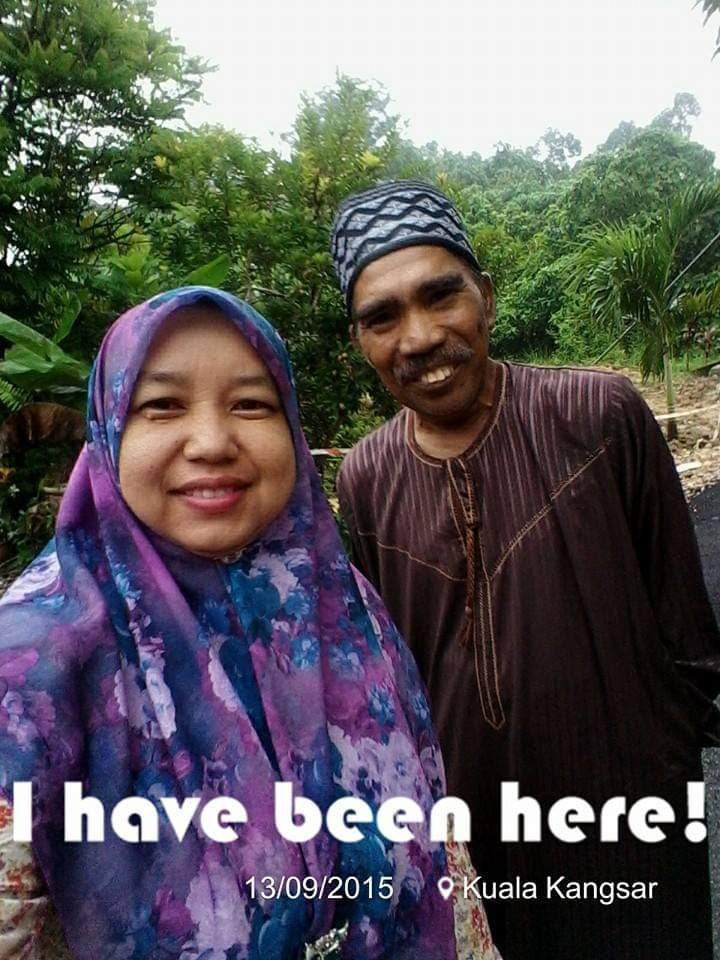
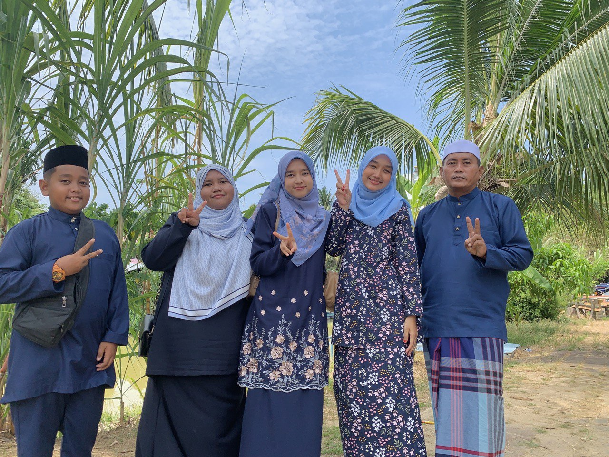
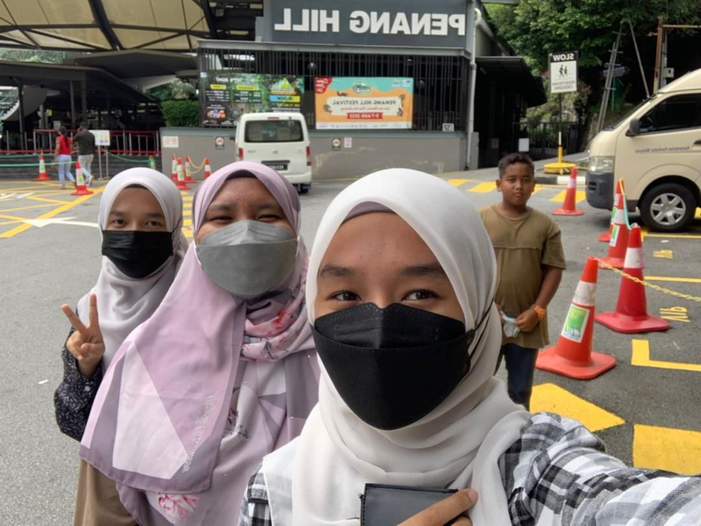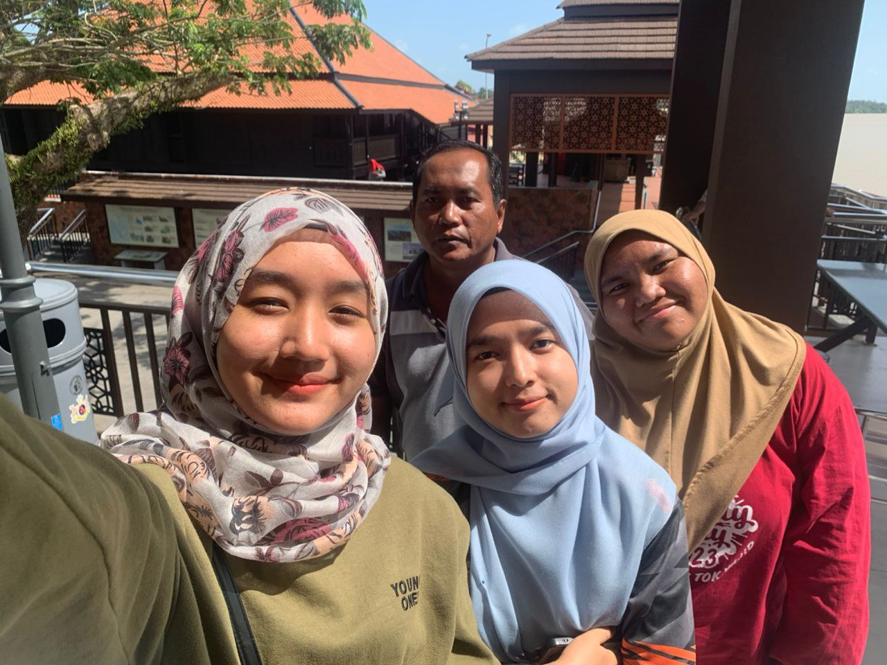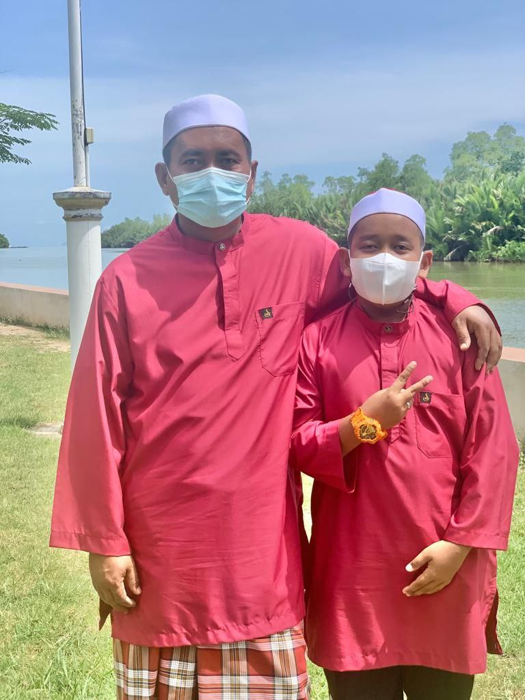
Even though Ma has passed away, we must continue the life ahead. Without a mother, life becomes empty and meaningless. Mother's presence gives brightness to the family. However, we are still proud of our mother (Ma) because she was a cancer patient for ten years, and she was someone who never gave up and lived the rest of her life as a wife and mother. Till we meet again Ma!